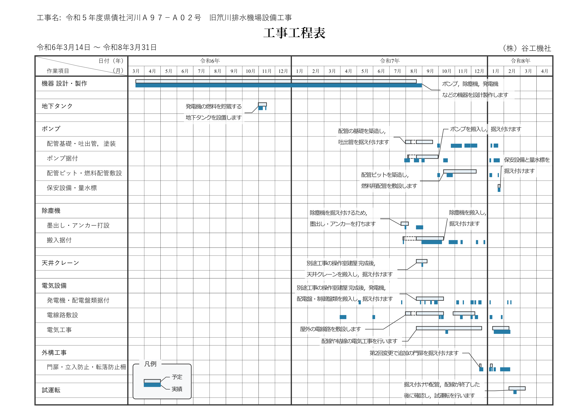

【工事の予定】
《今月・今週の予定》
| 月日 | 作業予定 | 備 考 |
|---|---|---|
| 10-27（月） | 吐出管配管 排気管配管 |
|
| 10-28（火） | 吐出管配管 排気管配管 |
|
| 10-29（水） | 吐出管配管 排気管配管 |
|
| 10-30（木） | 吐出管配管 排気管配管 |
|
| 10-31（金） | 排気管配管 除塵機付属品取付 |
|
| 11-01（土） | 休み | |
| 11-02（日） | 休み |
| 月日 | 作業予定 | 備 考 |
|---|---|---|
| 11-03（月） | 休み |
（文化の日） |
| 11-04（火） | 吐出管配管 排気消音器搬入・据付 |
|
| 11-05（水） | 吐出管配管 排気消音器据付 |
|
| 11-06（木） | 吐出管配管 発電機盤，架台搬入・据付 |
|
| 11-07（金） | 除塵機付属品取付 発電機盤，架台据付 |
|
| 11-08（土） | 休み | |
| 11-09（日） | 休み |
| 月日 | 作業予定 | 備 考 |
|---|---|---|
| 11-10（月） | 水平コンベア据付 ハンドホール，FEP布設 |
|
| 11-11（火） | 水平コンベア据付 ピット防塵塗装 ハンドホール，FEP布設 |
|
| 11-12（水） | 水平コンベア据付 ピット防塵塗装 ハンドホール，FEP布設 |
|
| 11-13（木） | 水平コンベア据付 ハンドホール，FEP布設 |
|
| 11-14（金） | 水平コンベア据付 ハンドホール，FEP布設 |
|
| 11-15（土） | 休み | |
| 11-16（日） | 休み |
| 月日 | 作業予定 | 備 考 |
|---|---|---|
| 11-17（月） | 直流電源盤搬入・据付 |
|
| 11-18（火） | 直流電源盤据付 排気管配管 |
|
| 11-19（水） | 排気管配管 |
|
| 11-20（木） | 排気管配管 |
|
| 11-21（金） | 排気管配管 |
|
| 11-22（土） | 休み | |
| 11-23（日） | 休み | （勤労感謝の日） |
《工事全体の予定》
この工事の全体工程表を下に示します。

【ウィンドマップ & 天気予報】
地図上での風のアニメーションと天気予報の
「Windy.com」
サイトを埋め込んで下に表示しています。